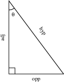

Trigonometry Review
The Basic Trig Functions
Some Definitions
First let’s define the six trig functions: sine, cosine, tangent, secant, cotangent and cosecant, and see what they have to do with triangles. The mnemonic SOH-CAH-TOA captures the definitions of the three most common trig functions, at least for angles in the first quadrant (between 0 and π/2 radians). You will need to know the following:
- Sine = Opposite / Hypotenuse
\(\displaystyle \text{Sine}=\frac{\text{Opposite}}{\text{Hypotenuse}}\) - Cosine = Adjacent / Hypotenuse
\(\displaystyle \text{Cosine}=\frac{\text{Adjacent}}{\text{Hypotenuse}}\) - Tangent = Opposite / Adjacent
\(\displaystyle \text{Tangent}=\frac{\text{Opposite}}{\text{Adjacent}}\)

The other trig functions are defined as reciprocals of the first three, and below you will find the reciprocal relationships (which you need to know) as well as the resulting triangle relationships of the other three trig functions. You need not memorize the triangle relationships of these trig functions, as long as you know the reciprocal relationships. (The colorful diagram is interesting, but you need not worry about it.)
- Secant = 1 / Cosine = Hypotenuse / Adjacent
\(\displaystyle \text{Secant}=\frac{1}{\text{Cosine}}=\frac{\text{Hypotenuse}}{\text{Adjacent}}\) - Cosecant = 1 / Sine = Hypotenuse / Opposite
\(\displaystyle \text{Cosecant}=\frac{1}{\text{Sine}}=\frac{\text{Hypotenuse}}{\text{Opposite}}\) - Cotangent = 1 / Tangent = Adjacent / Opposite
\(\displaystyle \text{Cotangent}=\frac{1}{\text{Tangent}}=\frac{\text{Adjacent}}{\text{Opposite}}\)
Basic Trig Identities
Next let’s see how these functions are related. These are identities you will need for calculus (there are many others you learned in your trig class that we generally do not use in calculus).
- \(\sin(-\theta)=-\sin(\theta)\)
- \(\cos(-\theta)=+\cos(\theta)\)
- \(\sin(2\theta)=2\sin(\theta)\cos(\theta)\)
- \(\sin^2(\theta)+\cos^2(\theta)=1\)
- \(\tan^2(\theta)+1=\sec^2(\theta)\)
- \(1+\cot^2(\theta)=\csc^2(\theta)\)
- \(\cos^2(\theta)=\frac{1+\cos(2\theta)}{2}\)
- \(\sin^2(\theta)=\frac{1-\cos(2\theta)}{2}\)
The first two say that sine is an odd function, and that cosine is an even function.
DO: Play with positive and negative angles on the unit circle to see why the first two identities make sense.
The next three are called Pythagorean identities, since they’re all based on the Pythagorean theorem. Notice that if you take the primary Pythagorean identity, \(\sin^2(\theta)+\cos^2(\theta)=1\), and divide all terms by \(\cos^2(\theta)\) you get the tangent/secant Pythagorean identity. Similarly, if you divide all terms of the primary identity by \(\sin^2(\theta)\) you get the cotangent/cosecant identity. You need not memorize the last two since they are so easily computed.
The last two identities will be used to help compute integrals, during the second semester of calculus.
The Unit Circle
You should know the sines, cosines and tangents that come from 30-60-90 right triangles and isosceles right triangles. Remember that \(\pi/6\) radians is 30 degrees, \(\pi/4\) radians is 45 degrees, and \(\pi/3\) radians is 60 degrees.
DO: Draw the right triangle with legs of length \(1\) and \(\sqrt{3}\) and hypotenuse of length \(2\). The angle opposite the shorter leg (of length \(1\)) is \(\pi/6\) and the angle opposite the longer leg (of length \(\sqrt{3}\)) is \(\pi/3\). If you memorize this triangle, you are set, since from this triangle you get all the following values:
| Angle | sin | cos | tan |
|---|---|---|---|
| \(\pi/6\) | \(\frac{1}{2}\) | \(\frac{\sqrt{3}}{2}\) | \(\frac{1}{\sqrt{3}}\) |
| \(\pi/4\) | \(\frac{1}{\sqrt{2}}\) | \(\frac{1}{\sqrt{2}}\) | \(1\) |
| \(\pi/3\) | \(\frac{\sqrt{3}}{2}\) | \(\frac{1}{2}\) | \(\sqrt{3}\) |
Addition of angles, double and half angle formulas
Geometrically, we can deduce the addition of angles formulas by using similar triangles, and the definitions of sine and cosine. The picture below illustrates this, while the video explains how to deduce the other formulas.
\[ \sin(A+B)=\sin A\cos B+\cos A\sin B \]
\[ \cos(A+B)=\cos A\cos B-\sin A\sin B \]
\[ \tan(A+B)=\frac{\tan A+\tan B}{1-\tan A\tan B} \]
\[ \sin(2A)=2\sin A\cos A \]
\[ \cos(2A)=\cos^2 A-\sin^2 A=1-2\sin^2 A=2\cos^2 A-1 \]
\[ \cos\frac{A}{2}=\pm\sqrt{\frac{1+\cos A}{2}} \]
\[ \sin\frac{A}{2}=\pm\sqrt{\frac{1-\cos A}{2}} \]
The law of sines and the law of cosines
Finally, let’s see what the different trig functions tell us about non-right triangles. In a triangle with sides of lengths \(a\), \(b\), and \(c\), and angles \(\alpha\), \(\beta\) and \(\gamma\) opposite these three sides,

we have the following:
Trigonometric Laws
| Law | Formula |
|---|---|
| The Law of Sines | \(\frac{\sin(\alpha)}{a}=\frac{\sin(\beta)}{b}=\frac{\sin(\gamma)}{c}\) |
| The Law of Cosines | \(c^2=a^2+b^2 -2ab\cos(\gamma)\) |